Grades Database - Working Instructions
Table of Contents
-
System Overview
-
Import Student Grades Instructions
-
Update Student Grades Instructions
-
Managing Your Data
-
Troubleshooting Guide
1. System Overview
1.1 What is the Grades Database?
The Grades Database is a tool built into Google Sheets that helps you
manage student grades for multiple school years. Think of it as a
digital filing cabinet where you can:
-
Import grades from teacher's grade sheets into your main database
- Search for and update individual student grades when needed
- Keep track of who changed what and when
The system does most of the work for you, you just need to use simple
forms to import or update grades.
1.2 Quick Start Guide
To import grades from a teacher's grade sheet:
-
Open your spreadsheet → Click Upload at the top →
Choose Import Student Grades
-
Pick the school year, paste the link to the teacher's grade sheet
-
Click Import Student Grades and wait for it to finish
To update a student's grade:
-
Open your spreadsheet → Click Upload at the top →
Choose Update Student Grades
-
Pick the school year, type the student number, and pick the subject
-
Click Load Grades, change the grades you need to
update, and click Update Grades
Before you start:
-
Make sure you've created a sheet for the school year (like
"2024-2025")
-
The sheet name must follow the format "YYYY-YYYY" with a hyphen in the
middle
2. Import Student Grades Instructions
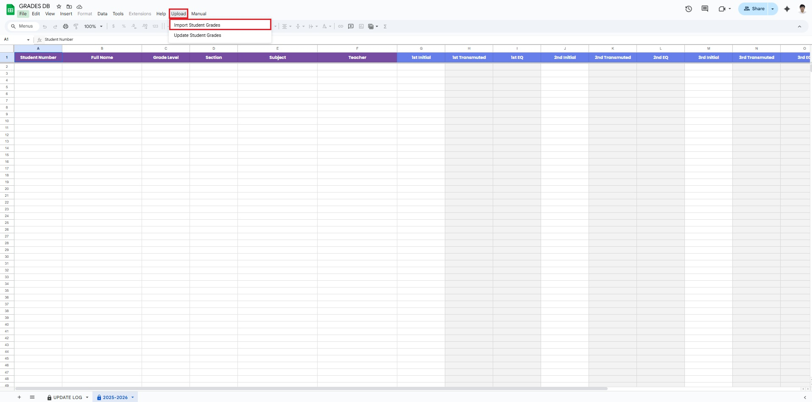
- Open the Google Sheets file for your Grades Database
-
Look at the top of the screen and click on Upload
-
Click Import Student Grades from the list that
appears
- A pop-up window will appear with the form
2.2 Importing Grades from OGS Template
Step 1: Choose the School Year
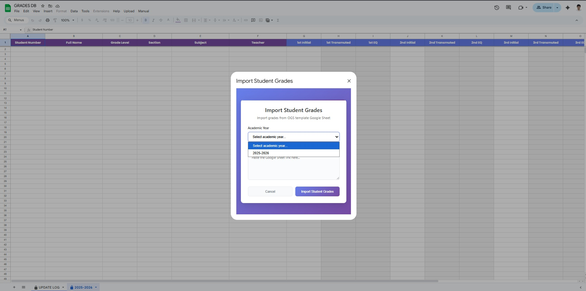
- Click on the box labeled Academic Year
-
A list will drop down click on the school year you want (like
2024-2025, etc.)
Important: The school year sheet must already exist
in your spreadsheet. If you don't see your school year in the list,
you need to create the sheet first.
Step 2: Get the Teacher's Grade Sheet Link
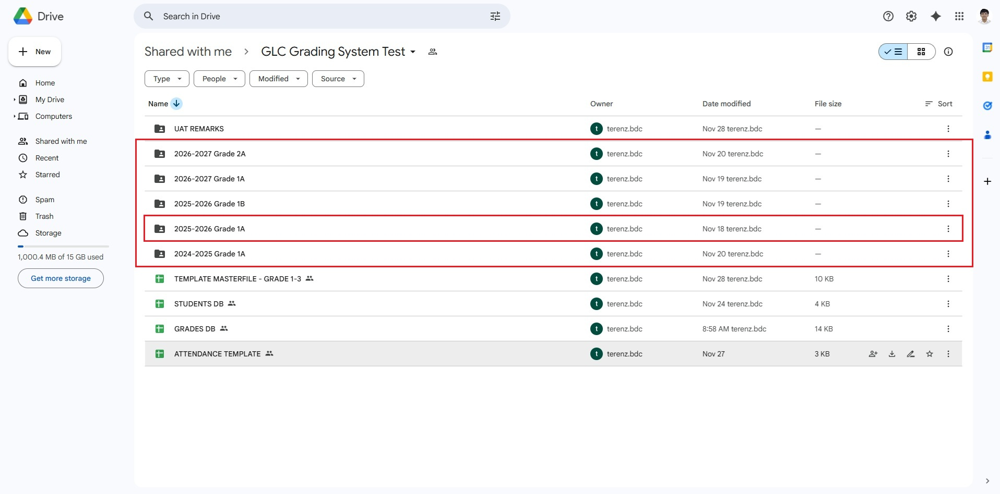
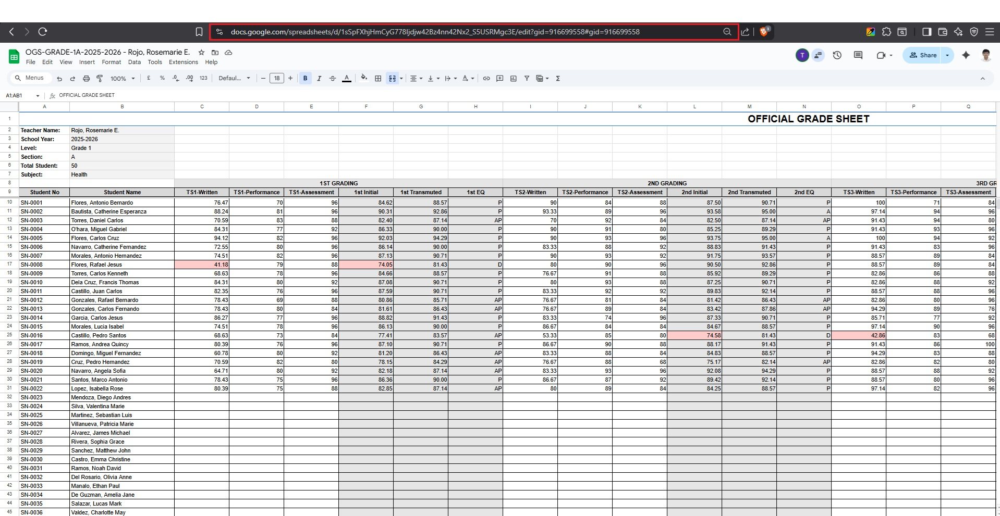
- Open the teacher's grade sheet (OGS template) in Google Sheets
- Look at the top of your browser where the web address is shown
- Click once to select all the text in the address bar
- Copy it (press Ctrl+C on Windows or Command+C on Mac)
What the link looks like: It should start with
https://docs.google.com/spreadsheets/d/ followed by a
bunch of letters and numbers.
Step 3: Paste the Link
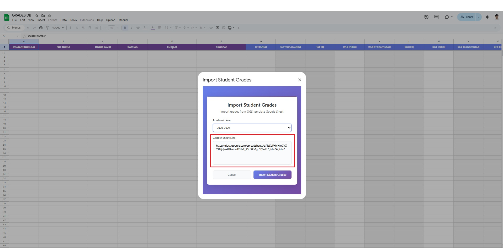
-
Click inside the Google Sheet Link box in the form
-
Paste the link you copied (press Ctrl+V on Windows or Command+V on
Mac)
- Make sure the whole link is there and nothing is cut off
Step 4: Import the Grades
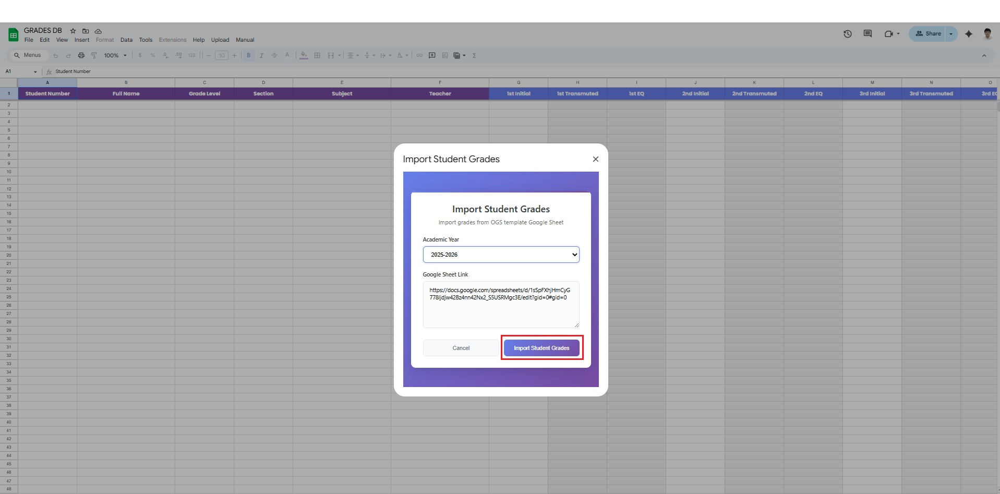
-
Click the blue Import Student Grades button at the
bottom
-
The button will change to say Importing... - this
means the system is working
-
Wait patiently, this might take a minute or two depending on how many
grades there are
- When it's done, you'll see a message saying it was successful
- The form will close automatically
Step 5: Check That It Worked
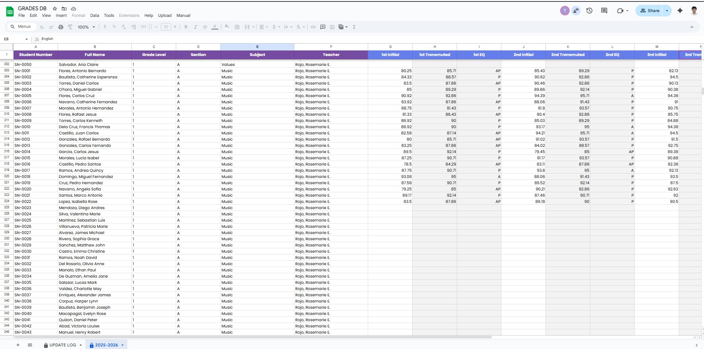
- Look at the bottom of your spreadsheet where the sheet tabs are
- Click on the school year sheet you selected (like "2024-2025")
- You should see the student grades starting from row 2
- Check that all the subjects are there
- Make sure the student names and grades look correct
2.3 What Happens During Import
When you import grades, the system automatically:
-
Reads the teacher's information: Gets the teacher's
name, school year, grade level, and section from the grade sheet
-
Imports all subjects: Copies grades from every
subject in the grade sheet (except Attendance, Character, and some
other special sheets)
-
Handles MAPEH differently: For MAPEH subjects, it
only brings in the Final Grading and Final EQ scores
-
Updates or adds records: If a student already has a
grade for that subject, it updates it. If not, it adds a new row
-
Keeps everything organized: Maintains the same order
of subjects as in the original grade sheet
2.4 Error Messages and Solutions
Missing School Year
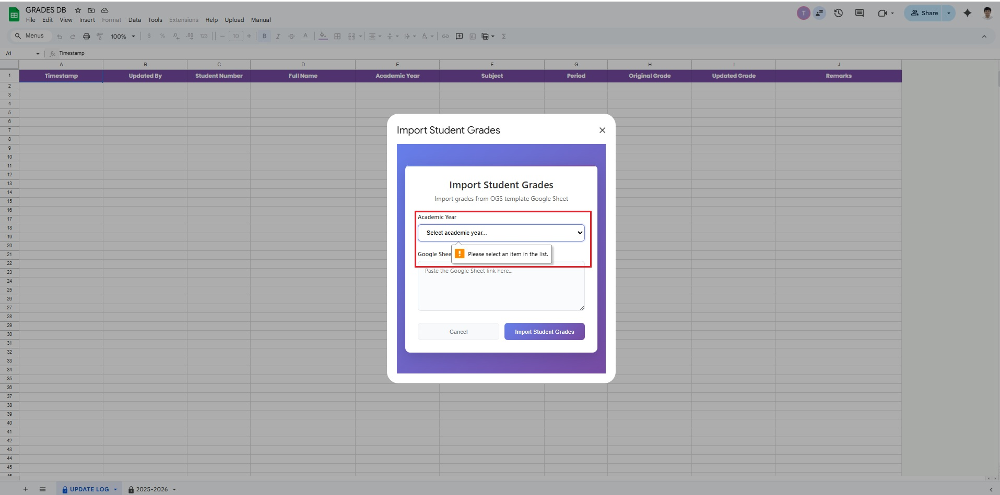
What this means: You forgot to pick a school year
before clicking the import button.
How to fix it:
-
Click on the Academic Year dropdown at the top of the
form
- Choose a school year from the list
- Then click Import Student Grades again
Invalid Link
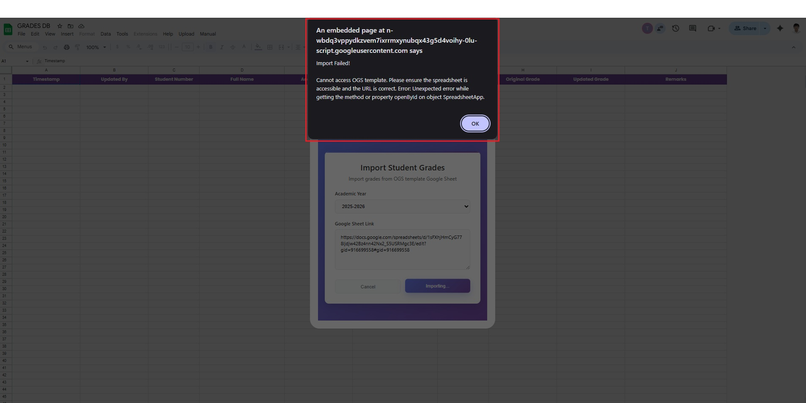
What this means: The link you pasted isn't a valid
Google Sheets link, or something is missing.
How to fix it:
- Go back to the teacher's grade sheet
-
Make sure you're copying from the address bar at the very top of your
browser
- Copy the entire link, don't miss any part of it
-
The link should start with
https://docs.google.com/spreadsheets/
- Paste it carefully into the form and try again
Can't Open the Grade Sheet
What this means: The system can't open the teacher's
grade sheet you're trying to import from.
How to fix it:
- Make sure you have permission to view the teacher's grade sheet
-
Try opening the link in a new browser tab to see if you can access it
- If you can't open it, ask the teacher to share it with you
- Check that the link is correct and the grade sheet still exists
No Subjects Found
What this means: The teacher's grade sheet doesn't have
any subject sheets that can be imported.
How to fix it:
-
Open the teacher's grade sheet and look at the sheet tabs at the
bottom
-
Make sure there are subject sheets (like Math, Science, English, etc.)
-
Check that the sheets aren't named "Attendance", "Character",
"Characters", or "MAPEH" by themselves (these are skipped during
import)
- Make sure the grade sheet is set up correctly
No Student Grades Found
What this means: The teacher's grade sheet doesn't have
any student data that can be imported.
How to fix it:
- Open the teacher's grade sheet
-
Check that the subject sheets have student information filled in
- Look for student names and grades starting around row 10
-
If the grades aren't there, the teacher needs to fill them in first
School Year Sheet Doesn't Exist
What this means: The school year you picked doesn't
actually exist as a sheet in your spreadsheet.
How to fix it:
- Look at the bottom of your spreadsheet at the sheet tabs
-
Check if there's a sheet named exactly like the school year (example:
"2024-2025")
-
If not, create a new sheet and name it following this format:
"YYYY-YYYY" with a hyphen
- After creating the sheet, refresh the form and try again
3. Update Student Grades Instructions
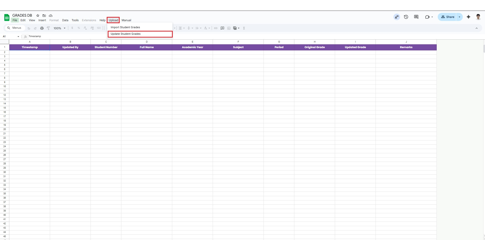
- Open the Google Sheets file for your Grades Database
-
Look at the top of the screen and click on Upload
-
Click Update Student Grades from the list that
appears
- A pop-up window will appear with the form
3.2 Finding a Student's Grades
Step 1: Choose the School Year
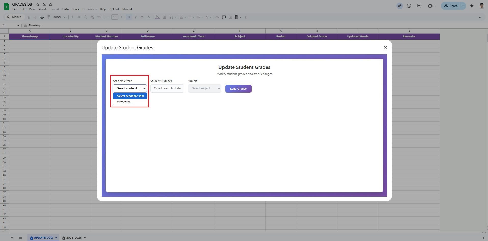
- Click on the box labeled Academic Year
-
A list will drop down - click on the school year (like 2024-2025,
etc.)
-
After you pick this, the system will be ready to help you find student
numbers
Step 2: Type the Student Number
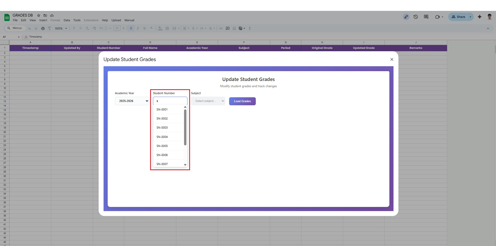
- Click inside the Student Number box
- Start typing the student's number
-
As you type, you'll see matching student numbers appear below - this
helps you find the right one quickly
-
You can click on a suggestion from the list, or just keep typing the
full number
-
You can also use the up and down arrow keys on your keyboard to move
through the suggestions, then press Enter to select one
Step 3: Choose the Subject
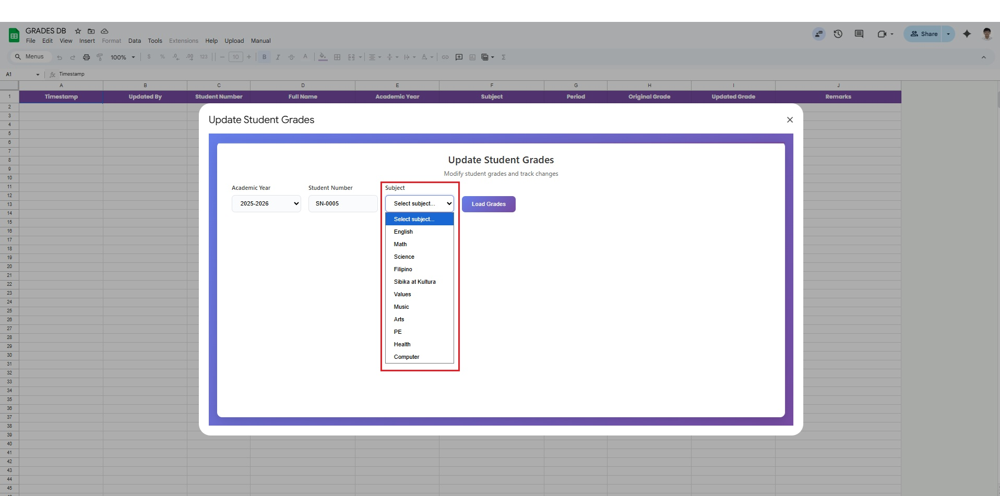
-
After you type the student number, the
Subject dropdown will become clickable
-
Click on it and choose which subject you want to update (like Math,
Science, etc.)
-
You'll only see subjects that this student actually has grades for
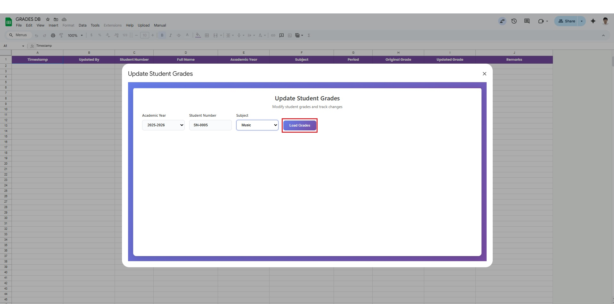
- Click the blue Load Grades button
-
The button will change to say Loading... while it
searches
- Wait a moment - it usually only takes a few seconds
-
If the student and subject are found, you'll see all their grade
information appear on the screen
- The update section will appear so you can make changes
Step 5: Review What You Found
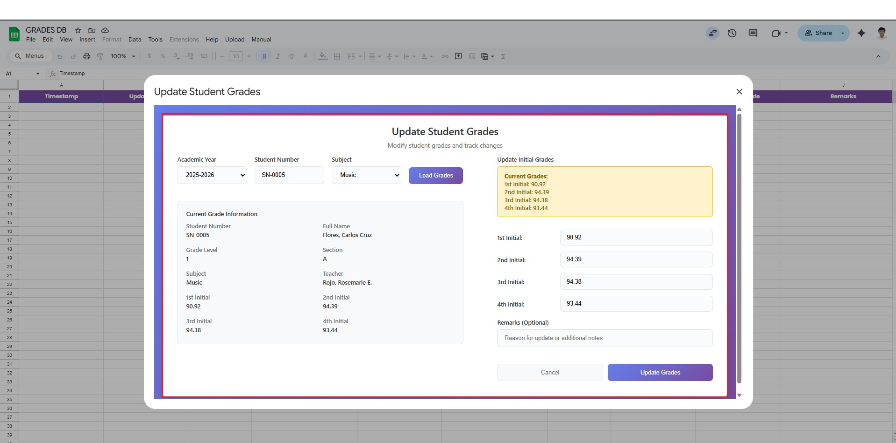
-
You'll see the student's full name, grade level, section, and teacher
-
All four grading periods will be displayed with their current grades
- The boxes below will be ready for you to type in new grades
- You can now proceed to update the grades
3.3 Changing Student Grades
Step 1: Make Sure Everything is Loaded
Before you can update grades:
- You must have completed the search steps above
- The student's grade information must be showing on the screen
- The update section with the input boxes must be visible
Step 2: Look at the Current Grades
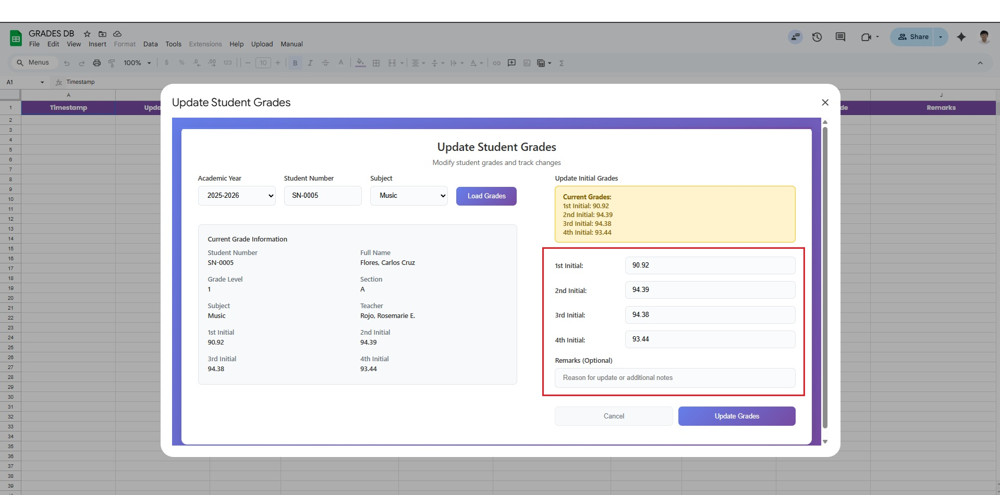
-
At the top of the update section, you'll see all the current grades
for each grading period
- Take a moment to review these before making changes
-
The input boxes below are already filled in with these current values
Step 3: Type the New Grades
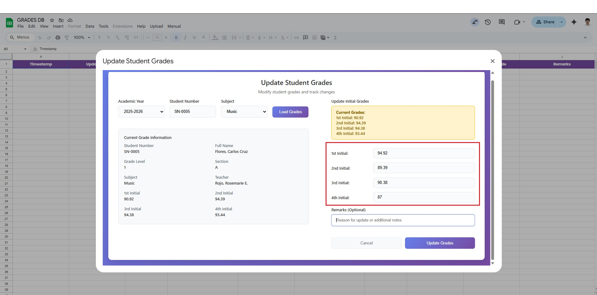
- Click in the box for the grading period you want to change
- Type the new grade
- You can change one period or multiple periods at the same time
-
If you don't want to change a period, just leave that box alone - it
won't be updated
Tip: You only need to change the periods that are
wrong or need updating. Any box you don't touch will stay the same.
Step 4: Add a Note (Optional but Helpful)
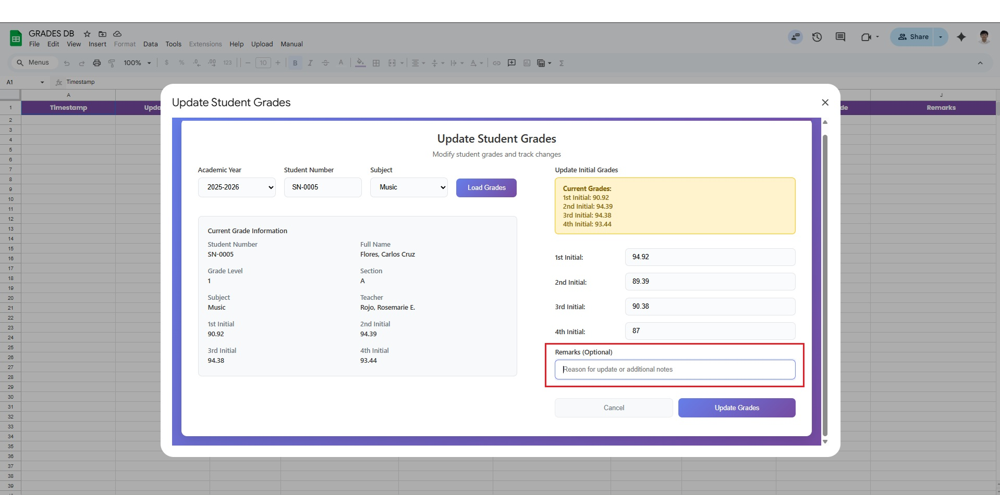
- Scroll down to the Remarks box
- Type a note about why you're making this change
-
For example: "Corrected data entry error" or "Updated per teacher
request"
- This helps keep track of why grades were changed
Why this matters: These notes are saved in a log, so
if anyone asks later why a grade was changed, you'll have a record.
Step 5: Save Your Changes
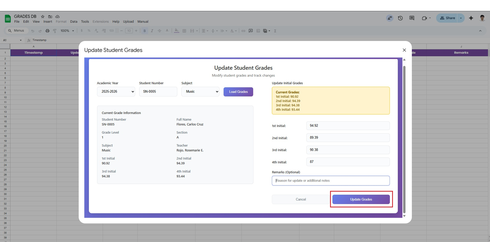
-
When you're ready, click the green
Update Grades button
-
The button will change to say Updating... while the
system saves your changes
- Wait for the success message - don't close the form yet
- Only the periods you changed will be updated
Step 6: What Happens Next
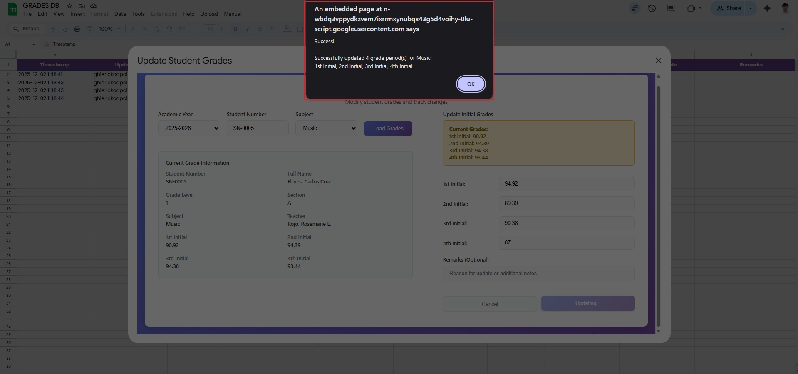
After you save:
-
A message will appear telling you which periods were successfully
updated
-
Each change you made is automatically recorded in a special log sheet
- The form will close by itself
- You can check the school year sheet to see your changes
-
You can also check the UPDATE LOG sheet to see the record of your
change
3.4 Error Messages and Solutions
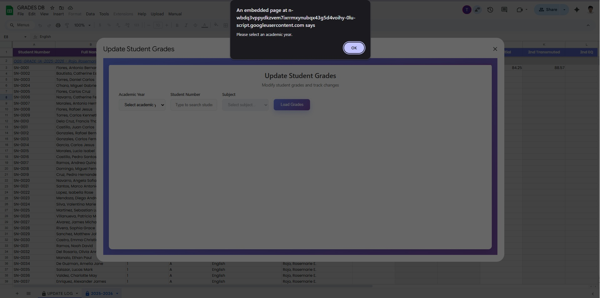
What this means: You tried to search for grades or save
changes without filling in all the required information.
How to fix it:
- Make sure you picked a school year
- Make sure you typed a student number
- Make sure you picked a subject
-
When updating, make sure you changed at least one grade to a new value
- Fill in any missing information and try again
Nothing to Update
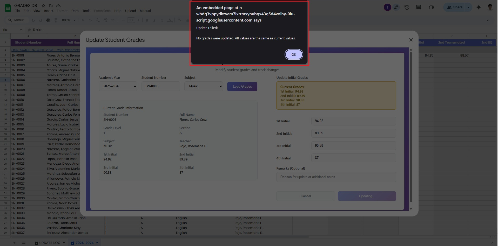
What this means: All the grades you typed are exactly
the same as what's already in the system, so there's nothing to change.
How to fix it:
- Look at the current grades shown above the input boxes
-
Make sure you're changing at least one grade to a different number
- Type in the new grades
- Then click Update Grades again
Haven't Loaded Grades Yet
What this means: You're trying to update grades without
first loading the student's information.
How to fix it:
- Fill in the school year, student number, and subject at the top
- Click the Load Grades button
- Wait for the student's information to appear
- Then you can make your changes and update
Can't Find the Student
What this means: The system couldn't find any grades
for the student number and subject you entered.
How to fix it:
- Double-check that you typed the student number correctly
- Make sure you picked the right school year
- Check that the subject you selected is correct
-
Look at the school year sheet directly to see if this student has a
record for this subject
- The student might not have grades for that subject yet
4. Managing Your Data
4.1 Academic Year Sheets
How to Name Your Sheets
- Each school year needs its own sheet in your spreadsheet
- The sheet name must follow this exact format: "YYYY-YYYY"
- For example: "2024-2025" or "2023-2024"
- Use a hyphen (-) between the two years
-
You must create these sheets yourself - the system doesn't create them
automatically
-
Only sheets with this exact format will show up in the dropdown lists
How Your Sheets Are Organized
Row 1 - Headers (column names):
-
Student Number, Full Name, Grade Level, Section, Subject, Teacher
- 1st Initial, 1st Transmuted, 1st EQ
- 2nd Initial, 2nd Transmuted, 2nd EQ
- 3rd Initial, 3rd Transmuted, 3rd EQ
- 4th Initial, 4th Transmuted, 4th EQ
- Final Grading, Final EQ
Row 2 onwards - Student grade records:
- Each row is one student's grades for one subject
-
Each student will have multiple rows (one for each subject they take)
Understanding the Data
- Each school year has its own separate sheet
- Each row shows one student's grades for one specific subject
-
A student cannot have two rows for the same subject in the same school
year
-
When you import grades, the system automatically updates existing rows
or adds new ones
4.2 UPDATE LOG Sheet
What This Sheet Does
-
Every time you update a grade using the Update form, it gets recorded
here automatically
-
This sheet is created by itself the first time you update a grade
- Each grading period you change gets its own separate log entry
-
Think of this as a history book that shows every change that was made
For each change, the log saves:
- When: Date and time the change was made
-
Who: Email address of the person who made the change
- Student Info: Student number and full name
- Where: Which school year sheet was changed
- What Subject: Which subject was updated
-
Which Period: Which grading period (1st, 2nd, 3rd, or
4th)
- Old Grade: What the grade was before
- New Grade: What the grade was changed to
- Why: Any notes you wrote in the Remarks box
How to Use the Log
- Click on the "UPDATE LOG" tab at the bottom of your spreadsheet
-
You'll see a list of all changes, with the newest ones at the bottom
- Each row shows one change to one grading period
-
If you changed multiple periods at once, each one gets its own row
-
You can use the filter buttons at the top to search for specific
students or dates
4.3 Important Rules About Data
One Student, One Subject, One Record
-
In each school year sheet, a student can only have ONE row for each
subject
-
For example, Student 12345 can only have ONE row for Math in the
2024-2025 sheet
-
If you import grades for a student-subject combination that already
exists, the system updates that row instead of creating a new one
- This prevents duplicate records and keeps everything organized
What Can Be Updated
-
The Update form only changes the "Initial" grades (1st Initial, 2nd
Initial, 3rd Initial, 4th Initial)
-
The system doesn't update Transmuted grades, EQ grades, or Final
grades through this form
-
Each change is recorded in the log with the date and who made the
change
How Grades Are Stored
- Grades can be numbers or text
- Empty grades (blank cells) are allowed
-
When importing, the system keeps grades exactly as they appear in the
teacher's grade sheet
-
The system doesn't change or round the grades - they stay exactly as
imported
5. Troubleshooting Guide
Problem: When you click on the menu, the form doesn't
show up or you see an error.
Try these solutions:
-
Check internet: Make sure you're connected to the
internet
-
Refresh the page: Press F5 on your keyboard or click
the circular arrow button in your browser
-
Close and reopen: If the form is stuck halfway, close
it and try opening it again from the menu
-
Check permissions: Ask your administrator if you're
allowed to edit this spreadsheet
-
Wait a moment: Sometimes it just needs a few seconds
to load - be patient
-
Contact help: If none of this works, contact your
systems person for help
5.2 Can't Import Grades
Problem: You tried to import grades but it didn't work
or showed an error message.
Try these solutions:
-
Check the link: Make sure you copied the entire web
address from the teacher's grade sheet - nothing should be cut off
-
Check access: Try opening the teacher's grade sheet
link in a new browser tab - if you can't open it, you need to ask the
teacher to share it with you
-
Check subjects: Open the teacher's grade sheet and
make sure there are subject sheets with student grades filled in
-
Check school year: Make sure the school year sheet
exists in your database (look at the tabs at the bottom)
-
Try again: Sometimes it just needs another try -
close the form and start over
-
Check format: Make sure the teacher's grade sheet is
in the correct format with grades starting around row 10
5.3 Can't Find Student Grades
Problem: When you search for a student, it says it
can't find them.
Try these solutions:
-
Check student number: Make sure you typed the student
number exactly right - no extra spaces or missing numbers
-
Check school year: Make sure you picked the correct
school year from the dropdown
-
Check subject: Make sure you picked a subject the
student actually takes
-
Look manually: Open the school year sheet and look
for the student yourself to confirm they have a record
-
Check spelling: If you're using autocomplete, make
sure you selected the right student number from the suggestions
-
Verify enrollment: The student might not have grades
for that subject yet
5.4 Changes Won't Save
Problem: You made changes but they didn't save or
disappeared.
Try these solutions:
-
Check internet: A bad internet connection can prevent
saving - make sure you're connected
-
Try again: Close the form, refresh your browser page
(F5), and try updating again
-
Check permissions: Make sure you have permission to
edit the spreadsheet (not just view it)
-
Check different grades: Make sure you actually
changed at least one grade to a different number
-
Wait: Sometimes it takes a few seconds - be patient
and watch for the success message
-
Look at the sheet: Check the school year sheet
directly to see if the change actually saved
-
Check log: Look at the UPDATE LOG sheet to see if
your change was recorded there
5.5 Academic Year Not Showing
Problem: The school year you need isn't in the dropdown
list.
Try these solutions:
-
Check the name: Look at your spreadsheet's tabs at
the bottom - is there a sheet named exactly "YYYY-YYYY" like
"2024-2025"?
-
Check the format: The name must have four numbers, a
hyphen, then four more numbers (2024-2025) - no spaces, no other
characters
-
Create it: If the sheet doesn't exist, create a new
sheet and name it correctly
-
Check spelling: Make sure there are no typos or extra
spaces in the sheet name
-
Refresh: After creating or fixing the sheet name,
close the form and open it again
-
Use a hyphen: Make sure you're using a hyphen (-) not
an underscore (_) or other dash
5.6 "Access Denied" Messages
Problem: You see messages saying you don't have
permission or access is denied.
Try these solutions:
-
Check your account: Make sure you're logged into the
right Google account (usually your school email)
-
Ask for access: Contact your administrator and ask
them to give you edit permission
-
Check grade sheet access: For imports, make sure the
teacher shared their grade sheet with you
-
Log out and in: Try signing out of Google completely,
then signing back in
-
Check sharing: The spreadsheet owner needs to share
it with you with "Editor" access, not just "Viewer"
-
Contact admin: If you're supposed to have access but
don't, ask your systems administrator for help
5.7 Update Log is Missing
Problem: You can't find the UPDATE LOG sheet or your
changes aren't being logged.
Try these solutions:
-
Look at the tabs: The UPDATE LOG sheet appears at the
bottom of your spreadsheet - look at all the tabs
-
Make an update: The log is created automatically the
first time someone updates a grade - if it doesn't exist yet, try
updating a grade
-
Check the sheet: Open the school year sheet to see if
your update actually saved there
-
Check for renaming: Someone might have renamed the
UPDATE LOG sheet - look for a sheet with update records
-
Wait for it: The sheet is created automatically when
needed - just keep using the system normally
-
Contact help: If updates are saving but not logging,
contact your systems person
5.8 Grades Look Wrong
Problem: After importing, the grades don't look correct
or are in the wrong format.
Try these solutions:
-
Check source: Open the teacher's grade sheet and
check if the grades are correct there
-
Check columns: Make sure the columns in the teacher's
grade sheet are in the right order
-
Re-import: Try importing again - sometimes it just
needs a fresh try
-
Check numbers: Make sure grades are entered as
numbers (85) not text ("eighty-five")
-
Look at headers: The teacher's grade sheet should
have the standard headers and layout
-
Compare: Look at both sheets side by side to see
what's different
5.9 System Won't Work
Problem: Nothing seems to work, forms won't run, or you
keep getting errors.
Try these solutions:
-
Refresh everything: Close your browser completely and
open it again
-
Check Google: Sometimes Google services have problems
- try again later
-
Try different browser: If you're using Chrome, try
Firefox or vice versa
-
Check internet: Make sure your internet connection is
stable
- Wait: Give it a few minutes and try again
-
Clear browser: Clear your browser's cache and cookies
(ask your IT person how)
-
Contact help: If it's completely broken, contact your
systems developer - they might need to fix something
5.10 MAPEH Grades Missing
Problem: When you import grades, MAPEH grades don't
show up.
Try these solutions:
-
Check MAPEH sheet: Open the teacher's grade sheet and
make sure there's a MAPEH sheet
-
Check Final grades: Look at the MAPEH sheet and make
sure the Final Grading and Final EQ columns have numbers in them
-
Right columns: The system looks for grades in
specific columns (AF for Final Grading, AG for Final EQ)
-
Check students: Make sure there are student names and
data in the MAPEH sheet
-
Open and check: Look at the MAPEH sheet yourself to
verify the grades are actually there
-
Try re-import: Sometimes re-importing fixes the
problem
Note: MAPEH is handled differently - only Final
Grading and Final EQ are imported, not the individual quarter grades.
5.11 Seeing Duplicate Records
Problem: You see the same student with the same subject
listed multiple times.
Try these solutions:
-
Check carefully: Make sure they're actually
duplicates - look at all the columns to see if they're really
identical
-
Delete manually: Select the duplicate rows and delete
them (right-click and choose "Delete rows")
-
Re-import: After deleting duplicates, re-import from
the teacher's grade sheet - the system should update the remaining row
-
Check unique combo: Each student should only have ONE
row per subject in each school year
-
Avoid multiple imports: Don't import the same
teacher's grade sheet multiple times unless you need to update it
-
Prevention: The system tries to prevent duplicates,
but if you manually add rows they might duplicate
This guide covers everything you need to know to use the Grades
Database. If you need additional help, please contact your systems
developer.